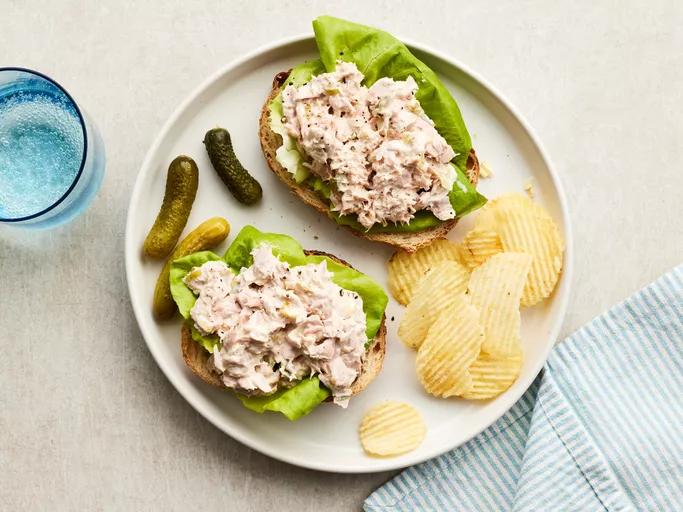

1. Quick Tuna Salad Recipe

1.1. Description
Learn how to make tuna salad with this recipe for a great dish
when you are in a hurry. It's very quick and
easy to make and tastes great every time!
1.2. Ingredients
- 1 can solid white tuna packed in water, drained
- ¼ cup creamy salad dressing
- 1 tablespoon sweet pickle relish, or to taste
1.3. Steps
- Gather the ingredients.
- Mash tuna together with creamy salad dressing and relish
in a small bowl with a fork.
- Put them on the slices of bread you prepared. Also you can add
a piece of lettuce or whatever you wish to bottom.
- Serve with pickles or crackers.
[Go back to recipes]